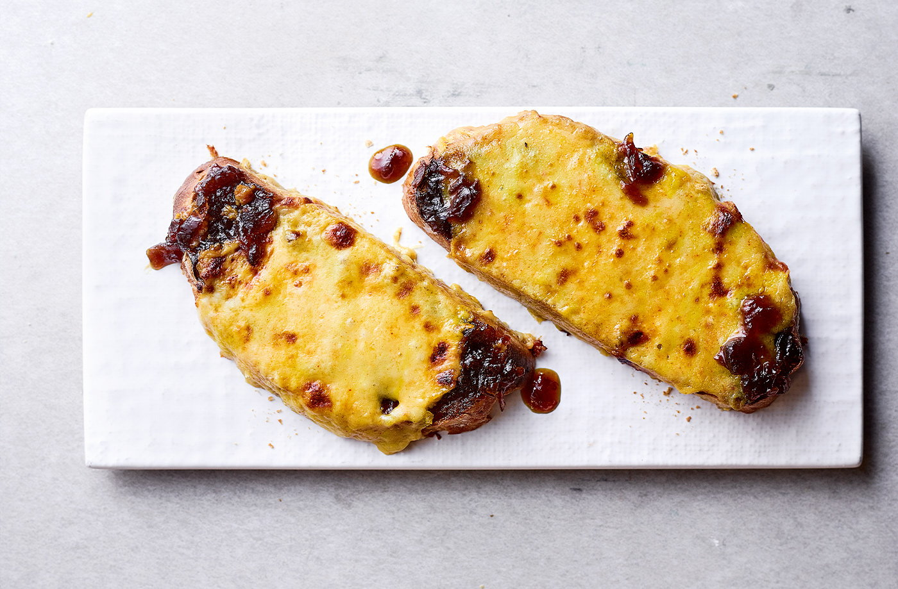

Chessy chutney toast

Chessy chutney toast recipe
Need something sweet 'n' spicy in a hurry?
This cheesy toast, topped with onion chutney
and mature British cheeses, is bound to please
the crowd. Swap the boule for sourdough for
extra tang.
Ingredients
- 30g finely grated mature Cheddar
- 30g finely grated Cheshire cheese
- 1 tbsp milk
- ⅛ tsp Worcestershire sauce
- ¼ tsp English mustard
- pinch cayenne pepper
- 2 slices white stonebaked boule
- 1 1/2 tsp red onion chutney
Method
- Mix the grated cheeses, milk, Worcestershire sauce, English mustard and cayenne pepper in a bowl.
- Toast the boule slices.
- Spread with red onion chutney and top with the cheese mix. Grill on medium for 4-5 mins until melted.